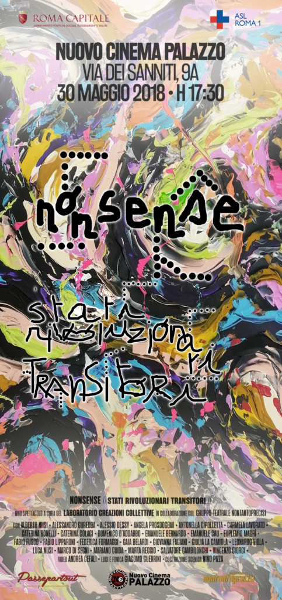
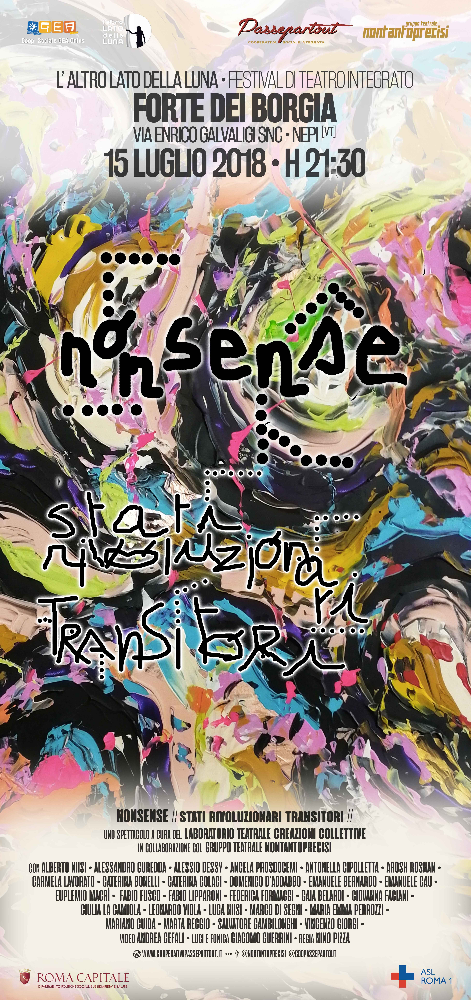
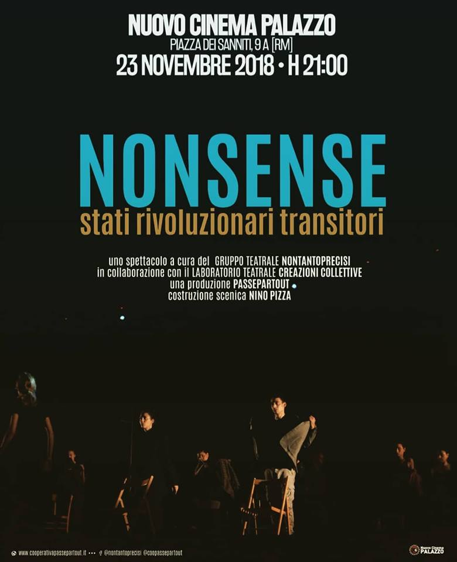
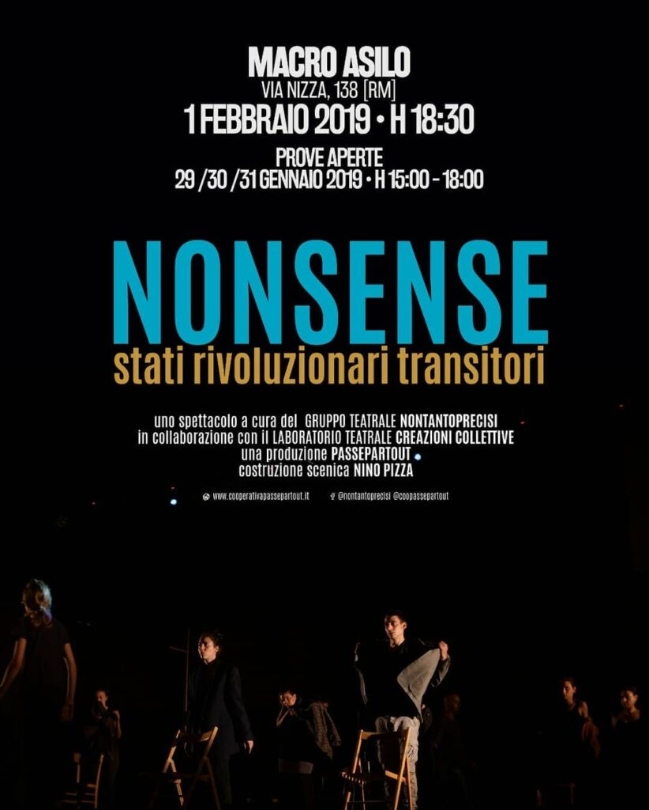
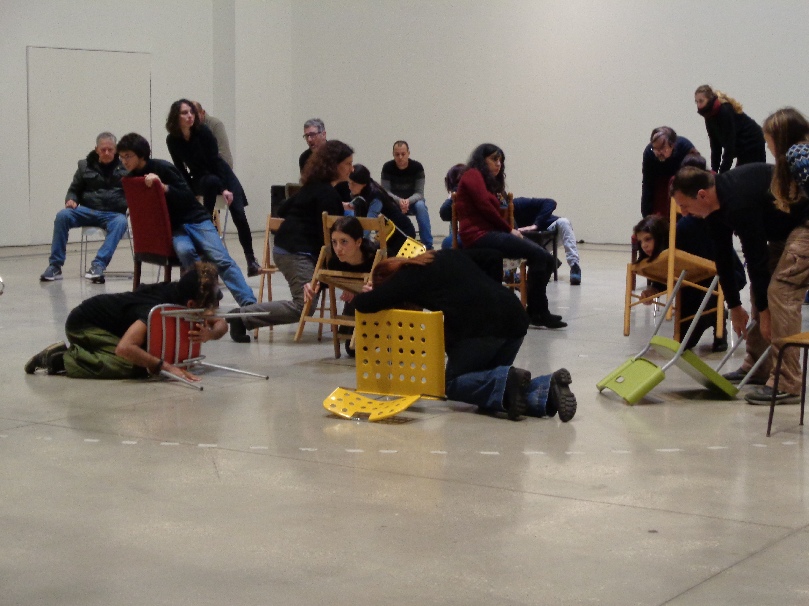
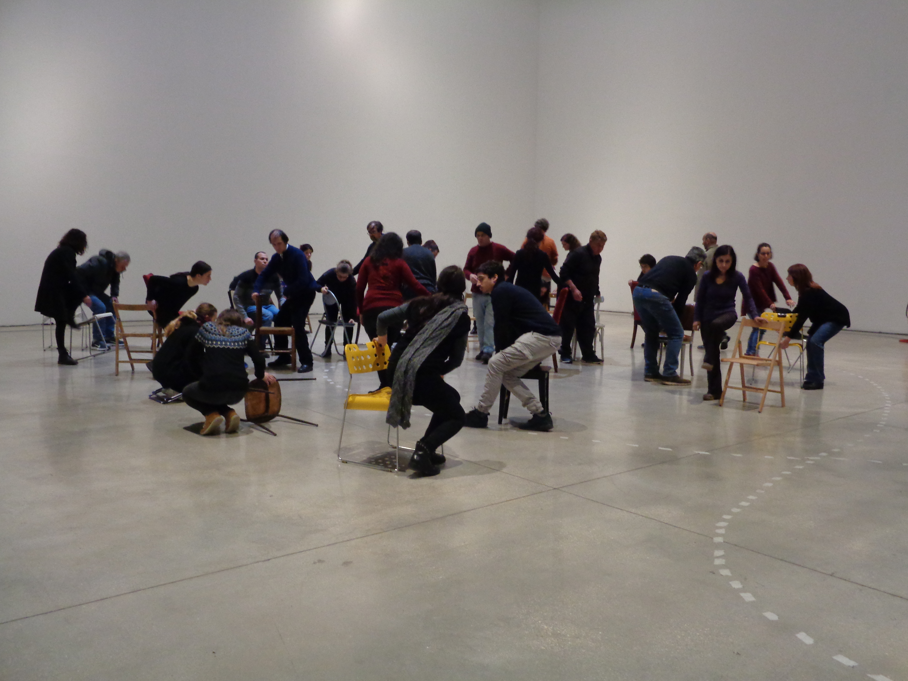
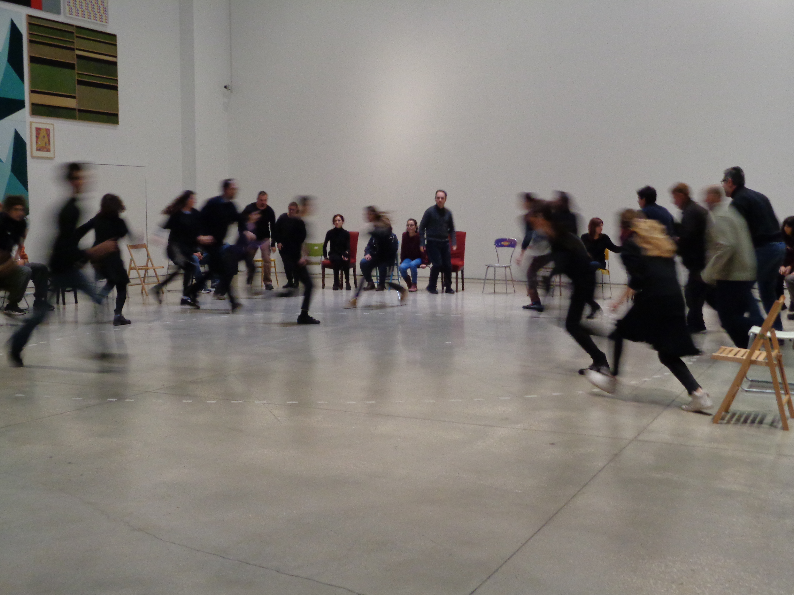
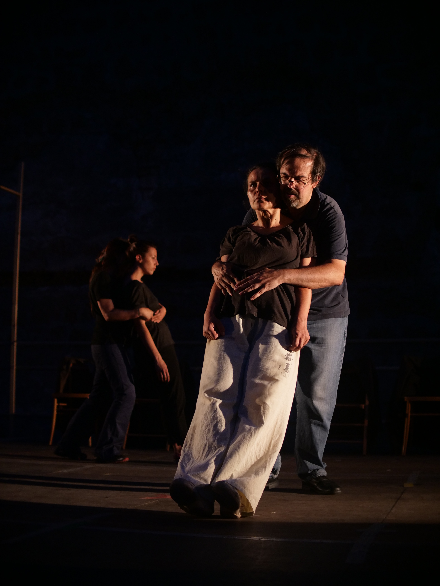

Sinossi
Cos’altro può accadere che non sia già accaduto, cos’altro che non stia accadendo ora e che ci lasci già vecchi nel pensiero di quel che vorremmo. Cos’altro si può fare che non sia stato già fatto e visto, cos’altro si può dire che non sia già detto e ascoltato. Cosa può esistere al di là di quanto sfugge senza soluzione in questa continuità prima dopo, fuori dentro che ci incarna al mondo e che non possediamo? Affidati al solo senso della ragione seguiamo i suoi percorsi lasciando che ci guidi senza condizioni, insensibili, fermi sulla soglia del desiderio che apre a nuovi spazi, altri movimenti, possibili mondi. Quasi vinti, corrotti dalla consuetudine non parliamo che in parole già dette, atti già compiuti, non ci muoviamo che in luoghi già visti, tempi già trascorsi scomparendo a noi stessi e così al mondo. Mossi dall’abitudine le cose ci scivolano addosso vestendoci con abiti che non sono nostri, come intorno a noi dove anime assenti tracciano i contorni di un paesaggio anonimo. Nonsense non sta per discorso senza senso, non vuol dire comportamento gratuito senza capo né coda. Al contrario è una sfida al consueto, alla dittatura del senso che elegge esclusivamente la logica della ragione trascurando le innumerevoli altre ragioni del corpo. Lavoriamo sulla scena contro noi stessi, contro quello che ci sembra motivato dall’abitudine, dalle soluzioni facili dell’ovvio, dai comportamenti di quotidiana inconsapevolezza, oltre quanto pensavamo già di possedere e di poter essere. Con fatica fisica senza rinunciare al rischio dell’errore, troviamo nell’azione collettiva del gruppo la nostra possibilità di agire, la risposta corporea alla volontà di presenza, la necessità di proporsi e l’immediatezza della scelta. Così quanto accade non è frutto di prescrizione, non è esecuzione di un progetto, non è lo svolgimento di un compito. Al contrario è manifesto, appartiene alla natura del tempo, alla materia dello spazio, alla reciprocità dei corpi vivi. Attraversa il pensiero come un umore senza ragione, risiede nella facoltà di vedere beffando le immagini o di sentire il rumore delle parole, è rivoluzionario perché senza compromessi, non si compiace e non fa sconti, chiede l’uso continuo della vita perché è transitorio, appare e già è oltre, vuole cura perché nasce nel lavoro. Venite, se pensate di conoscerci non ci vedrete.



